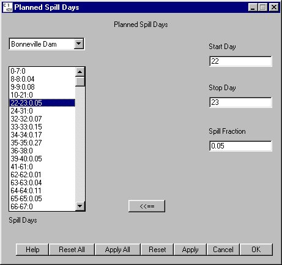

Planned Spill Days
Selecting Dam Spill Schedule opens the Planned Spill Days window and its companion window Preferred Fish Spill Periods for adjusting spill operations at dams. The Planned Spill section discusses how the settings in these two windows work together. The Planned Spill Days window controls Spill Fraction, the fraction of river flow spilled on an instantaneous basis, and Planned Spill Days, the Julian days when spill fractions are planned as part of the water budget and spill allocation agreements.
Spill Schedule opens the Planned Spill Days window and its companion window Preferred Fish Spill Periods for adjusting spill operations at dams. The Planned Spill section discusses how the settings in these two windows work together. The Planned Spill Days window controls Spill Fraction, the fraction of river flow spilled on an instantaneous basis, and Planned Spill Days, the Julian days when spill fractions are planned as part of the water budget and spill allocation agreements.
This is a Schedule Tool window with the following features:
- Dam Menu: List of dams at which to set spill days and spill fraction information.
- Spill Days list: Displays the days of Planned Spill and the instantaneous fraction of the river that is spilled within a period. Use the Start Day, Stop Day and Spill Fraction keyboard input boxes to create new periods or modify existing periods of spill.
1. Select a period (one line) in the Spill Days list to transfer the values into the text boxes.
2. Modify any of the values (Start Day, Stop Day, Spill Fraction).
3. Click  to transfer the values from the text boxes back into the Spill Days list.
to transfer the values from the text boxes back into the Spill Days list.
The new/modified values only take effect after clicking Apply / Apply All / OK. Click Reset / Reset All / Cancel to revert back to the last saved values.

Planned Spill Days window